Características
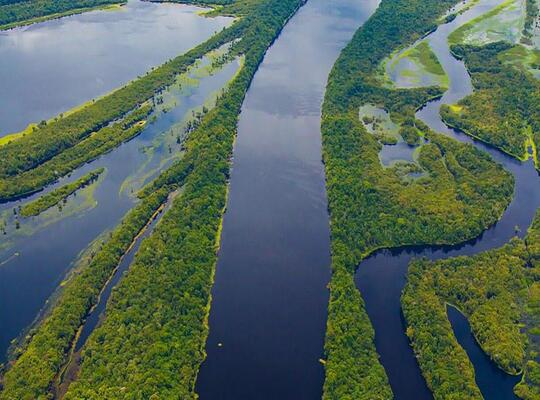
O bioma da Amazônia possui áreas com clima equatorial úmido, com altos níveis de precipitação e temperatura elevada. No brasil, o bioma ocupa 49% do território nacional e está localizado em nove estados brasileiros. A maioria do bioma está localizado no Brasil, mas também pode ser visto na Bolívia, Colômbia, Equador, Guiana, Guiana Francesa, Peru, Suriname e Venezuela.
Formado principalmente pelas planícies (inundadas pelos rios), planaltos e depressões. Sua vegetação abrange a Floresta Amazônica, a maior floresta tropical do mundo, com mais de 5 milhões de km².
Lista de estados
Acre, Amapá, Amazonas, Pará, Roraima, Rondônia, Mato Grosso, Maranhão e Tocantins.
Fauna
(Exemplos)
Uacari-Branco |
Bicho-Preguiça |
Peixe-Boi-da-Amazônia |
| 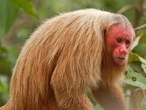 | 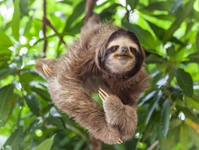 |
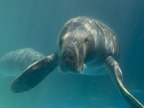 |
| Macaco de pelagem esbranquiçada com face desprovida de pelo, com uma pele de coloração vermelha. Se alimenta de frutos, insetos, sementes etc. | Animal de movimento lento que vive em galhos de árvores, o que é possível devido às suas grandes garras. Possuem pelo longo que ajudam na camuflagem, essa sendo sua principal forma de defesa. | Animais mamíferos que alcançam aproximadamente três metros de comprimento, com um corpo cinzento e mancha esbranquiçada no peito. Herbívoro, se alimentando principalmente de plantas aquáticas e semi-aquáticas. |
Boto |
Pirarucu |
Jacaretinga |
| 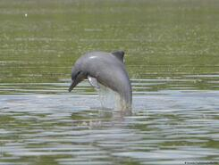 | 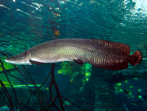 |
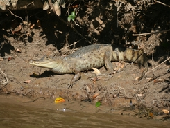 |
| Semelhante a golfinhos, por isso também recebem o nome de golfinhos-fluviais. Dentre suas espécies, uma delas é o famoso boto-cor-de-rosa, fonte de várias lendas. | Um dos maiores peixes de água doce do planeta, identificado pelo seu grande porte e também pela sua cuada vermelha. Sua alimentação inclui frutas, vermes, peixes e até mesmo aves aquáticas. | Jacaré de água doce que recebeu seu nome devido a coloração branca em seu dorso, "tinga" significando branco em tupi. Se alimentam de mamíferos, peixes, répteis etc. |
Harpia |
Anta |
| 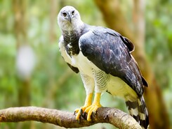 | 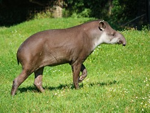 |
| Também chamado de gavião-real, uma ave de rapina que pode alcançar 20kg e quase três metros de envergadura. Pelo seu grande porte são capazes de caçar até mesmo preguiças ou macacos, assim como outras aves. | Maior mamífero terrestre do Brasil, alcançando 2,4 metros de comprimento. Possuem alimentação principalmente composta de frutos, tendo um papel importante na dispersão de sementes. |
Flora
(Características)
Vegetação caracterízada por florestas densas com árvores de grande porte. Devido a grande quantidade de chuvas, a flora pode ser separada em três áreas: Mata de terra firme, que nunca são inundadas e possuem vegetação seca; Matas de várzea, inundadas periódicamente; e Mata de igapó, sempre inundada e com vegetação baixa.
Castanheira |
Andiroba |
Vitória-Régia |
| 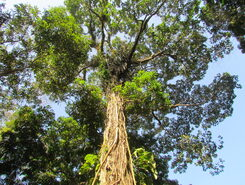 | 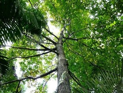 |
 |